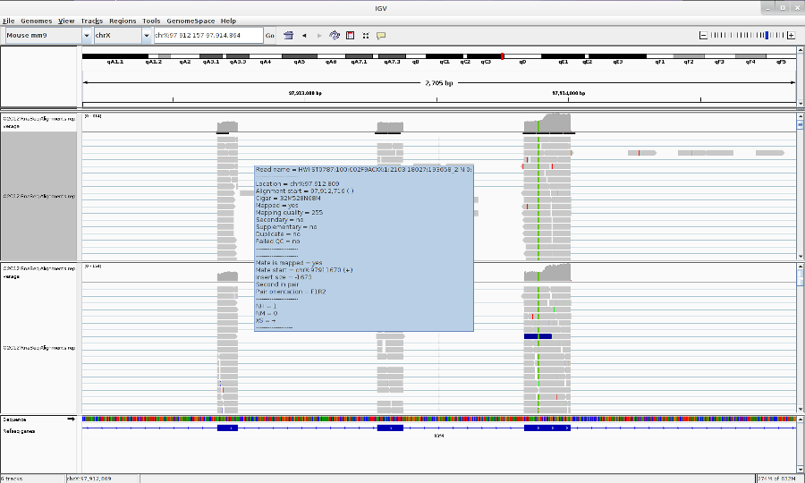
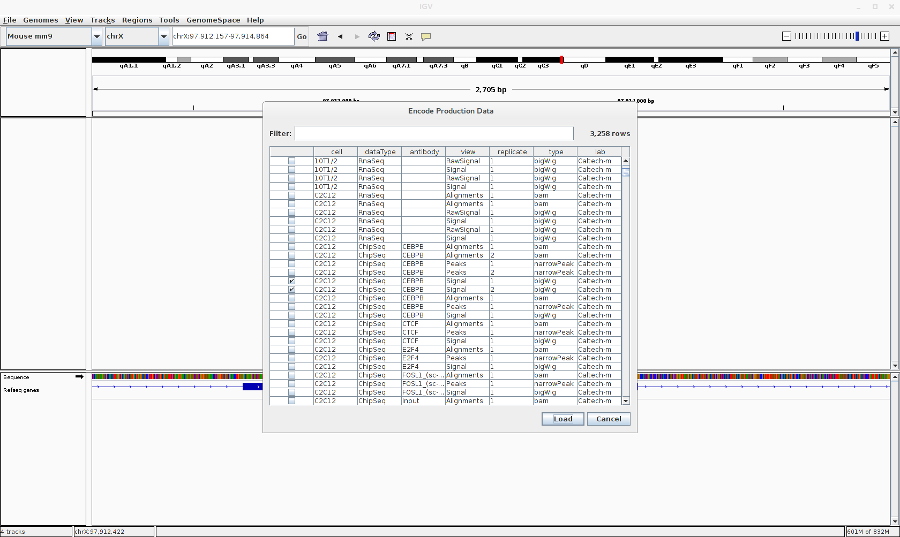

IGV Introduction
 Anton Nekrutenko
Anton Nekrutenko Joachim Wolff
Joachim Wolff Anne Pajon
Anne PajonOverview
question Questionsobjectives Objectives
time Time estimation: 2 hours
Supporting Materials
last_modification Last modification: Jan 6, 2021
Using the Integrative Genomics Viewer
Bioinformatics Galaxy Course
MPI-IE & University of Freiburg
To start IGV, go to the IGV downloads page: https://www.broadinstitute.org/software/igv/download.
User Interface
Main Window

Tool bar 
- The tool bar provides access to commonly used functions. The menu bar and pop-up menus (not shown) provide access to all other functions.
Chromosome 
- The red box on the chromosome ideogram indicates which portion of the chromosome is displayed. When zoomed out to display the full chromosome, the red box disappears from the ideogram.
Ruler 
- The ruler reflects the visible portion of the chromosome. The tick marks indicate chromosome locations. The span lists the number of bases currently displayed.
Tracks 
- IGV displays data in horizontal rows called tracks. Typically, each track represents one sample or experiment. This example shows methylation, gene expression, copy number and mutation data.
Features 
- IGV also displays features, such as genes, in tracks. By default, IGV displays data in one panel and features in another, as shown here. Drag-and-drop a track name to move a track from one panel to another. Combine data and feature panels by selecting that option on the General tab of the Preferences window.
Track names 
- Track names are listed in the far left panel. Legibility of the names depends on the height of the tracks; i.e., the smaller the track the less legible the name.
Attributes 
- Attribute names are listed at the top of the attribute panel. Colored blocks represent attribute values, where each unique value is assigned a unique color. Hover over a colored block to see the attribute value. Click an attribute name to sort tracks based on that attribute value.
Menu Bar
File
-
Load from File - Displays genomic data from one or more files.
-
Load from URL - Displays genomic data from a file identified by URL.
-
Load from Server - Displays genomic data from the IGV data server.
-
Load from DAS - Displays genomic data from a Distributed Annotation Server (DAS)
-
New Session - Unloads all currently loaded data, as if you exited and restarted IGV
-
Open Session - Opens a previously saved session file.
-
Save Session - Saves your current settings to a named session file
-
Save Image - Saves a snapshot of the IGV window to a graphics file, omitting the menu bar and tool bar. Can save in .png, .jpg, or .svg format.
-
Exit - Closes IGV.
Genomes
-
Load Genome from File - Loads a genome into IGV from your file system.
-
Load Genome from URL - Loads a genome into IGV from a web URL.
-
Load Genome from Server - Loads a genome into IGV from the IGV data server.
-
Create .genome File - Save your genome file in .genome format.
-
Manage Genome List - Choose which genomes to display in the genome drop-down menu in the tool bar.
View
-
Preferences - Opens a tabbed menu of data display preferences.
-
Color Legends - Displays color legends for track data, which may be modified.
-
Show Name Panel - Shows/hides the track name panel.
-
Set Name Panel Width - Resets the track name panel width.
-
Show Attribute Display - Shows/hides attributes and attribute values.
-
Select Attributes to Show - Shows/hides selected attributes and attribute values.
-
Show Header Panel - Shows/hides the chromosome location header panel.
-
Reorder Panels - Allows the user to reorder the display panels.
-
Go to - View and select loci visited in your navigation history.
Tracks
-
Sort Tracks - Sorts track data.
-
Group Tracks - Groups track data.
-
Filter Tracks - Filters track data.
-
Fit Data to Window - Sets the track height to display all of the data, or as much data as possible.
-
Set Track Height - Sets the track height to a specified value.
Regions
-
Region Navigator - Opens the region navigator.
-
Gene Lists - Opens the gene lists window.
-
Export Regions - Saves currently defined regions of interest to a BED file. If no regions of interest are defined, no BED file is created.
-
Import Regions - Imports regions of interest from a BED file.
Tools
-
Run Batch Script - Executes a series of sequential tasks. Users can load at .txt file that contains a list of commands, one per line, that will be run by IGV. The accepted commands are the same as the IGV Port Commands.
-
Run igvtools - Launches the igvtools interface window.
-
Find Motif - Search for a particular nucleotide sequence in the reference genome.
-
Gitools Heatmaps - Data and results are represented as browsable heatmaps. Data can be exported from IGV in gitools format, or loaded directly into a running gitools session. See http://www.gitools.org for details.
-
BEDTools - A fast, flexible suite of tools used to compare sets of genomic features. IGV uses BEDTools to compare features in loaded tracks, and view the results as a new track.
GenomeSpace
-
Load File from GenomeSpace - Load a file into IGV from your GenomeSpace directory.
-
Load Genome from GenomeSpace - Load a genome into IGV from your GenomeSpace directory.
-
Save Session to GenomeSpace - Save current IGV session to your GenomeSpace directory.
-
Load Session from GenomeSpace - Load a previous session from your GenomeSpace directory.
-
Logout - Log out of GenomeSpace
-
Register - Register a new account at GenomeSpace
Help
-
User Guide… - Displays the IGV User Guide.
-
Help Forum… - In your default web browser, opens the home page for the igv-help forum.
-
About IGV - Displays IGV version and build number.
Tool Bar
Genome drop-down box
- Loads a genome.
Chromosome drop-down box 
- Zooms to a chromosome.
Search box
- Displays the chromosome location being shown. To scroll to a different location, enter the gene name, locus, or track name and click Go.
Whole genome view 
- Zooms to whole genome view.

- Moves backward and forward through views of the genome like the back and forward buttons in a web browser.
Refresh 
- Refreshes the display.
Define a region 
- Defines a region of interest on the chromosome.

- Reduces the row height on all tracks to fit all data for the region in view into the window; will also expand tracks (to their maximum preferred size) to fill the view, if needed.

- Toggles the pop-up information windows in IGV on or off.
Zoom slider 
- Zooms in and out on a chromosome.
Pop-up Menus
To select tracks and display the pop-up menu, do one of the following:
-
Right-click a track to select it and display the pop-up menu.
-
Right-click an attribute value to select all tracks with that attribute value and display the pop-up menu. Tip: Keep in mind that right-clicking an attribute may select tracks that are not visible in the data panel. Scroll down the data panel to view all the selected tracks.
-
Control-click track names (Mac: Command-click) to select the tracks, then right-click one of the selections to display the pop-up menu.
Commands in the track pop-up menu change the display options for the selected tracks. Most changes made via the pop-up menu are lost when you exit IGV unless you save the session. In a few cases, changing the pop-up menu also changes an option in the Preferences window; these changes are persistent.
Using IGV: Examples
LOOKING AT ENCODE RNA-SEQ DATA
-
Open IGV (.igv.sh from command line)
-
Load the human genome : In the toolbar, Click Genome > Load Genome from Server > Search and select Human (hg19)
-
Load the encode RNA-Seq BAM files: Go to File > Load from ENCODE > Select C2C12 RNA-Seq BAM files (See image in the Pdf)

-
Go to your favorite location in the genome by entering the location in the Search box, zoom in to the reads by using Zoom button.
-
You can change the track properties by right-click on the track. Select View as pairs to see the left and right pairs of paired-end reads.

- You can make a sashimi plot to see reads aligning to each junction. Right-click > Sashimi plot.

- Save what you see by going to File > Save Image.
LOOKING AT ENCODE ChIP-Seq DATA
- Go to File > Load from ENCODE > Select C2C12 ChIP-Seq bigwig files

- Reset the track heights to make them comparable. Right click on the track > Set data range. Then change the scale.

-
You can also change the track colors, name and chart type (line,bar,heatmap).
-
Save the image (File > Save Image)
POPULAR FILE FORMATS THAT YOU CAN LOAD IN TO IGV
-
BAM
-
BED
-
BedGraph
-
bigBed
-
bigwig
-
FASTA
-
GFF/GTF
-
MAF
-
SAM/BAM
-
VCF
-
PSL
-
Narrowpeak
-
Many more
SOME OTHER THINGS YOU CAN DO
-
Take multiple images from regions in a bed file. First make a batch file from the bed file using bedtools (bedtoIgv). Then load the script in Tools > Run Batch Script.
-
Find a given motif. Tools > Find Motif.
-
Set startup preferences. View > preferences.
-
For more, have a look at the IGV documentation.
FOR IGV HELP AND DOCUMENTATION
GOTO: https://www.broadinstitute.org/igv/ or Click on Help in IGV menu.
Feedback
Did you use this material as an instructor? Feel free to give us feedback on how it went.

Citing this Tutorial
- Anton Nekrutenko, Joachim Wolff, Anne Pajon, 2021 IGV Introduction (Galaxy Training Materials). /training-material/topics/introduction/tutorials/igv-introduction/tutorial.html Online; accessed TODAY
- Batut et al., 2018 Community-Driven Data Analysis Training for Biology Cell Systems 10.1016/j.cels.2018.05.012
details BibTeX
@misc{introduction-igv-introduction, author = "Anton Nekrutenko and Joachim Wolff and Anne Pajon", title = "IGV Introduction (Galaxy Training Materials)", year = "2021", month = "01", day = "06" url = "\url{/training-material/topics/introduction/tutorials/igv-introduction/tutorial.html}", note = "[Online; accessed TODAY]" } @article{Batut_2018, doi = {10.1016/j.cels.2018.05.012}, url = {https://doi.org/10.1016%2Fj.cels.2018.05.012}, year = 2018, month = {jun}, publisher = {Elsevier {BV}}, volume = {6}, number = {6}, pages = {752--758.e1}, author = {B{\'{e}}r{\'{e}}nice Batut and Saskia Hiltemann and Andrea Bagnacani and Dannon Baker and Vivek Bhardwaj and Clemens Blank and Anthony Bretaudeau and Loraine Brillet-Gu{\'{e}}guen and Martin {\v{C}}ech and John Chilton and Dave Clements and Olivia Doppelt-Azeroual and Anika Erxleben and Mallory Ann Freeberg and Simon Gladman and Youri Hoogstrate and Hans-Rudolf Hotz and Torsten Houwaart and Pratik Jagtap and Delphine Larivi{\`{e}}re and Gildas Le Corguill{\'{e}} and Thomas Manke and Fabien Mareuil and Fidel Ram{\'{\i}}rez and Devon Ryan and Florian Christoph Sigloch and Nicola Soranzo and Joachim Wolff and Pavankumar Videm and Markus Wolfien and Aisanjiang Wubuli and Dilmurat Yusuf and James Taylor and Rolf Backofen and Anton Nekrutenko and Björn Grüning}, title = {Community-Driven Data Analysis Training for Biology}, journal = {Cell Systems} }